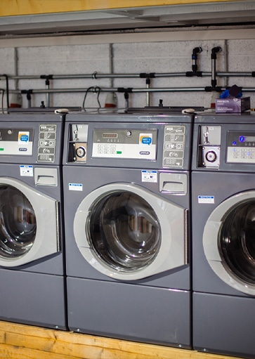
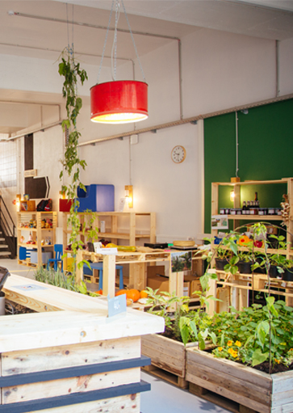
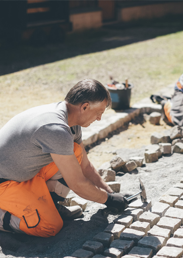
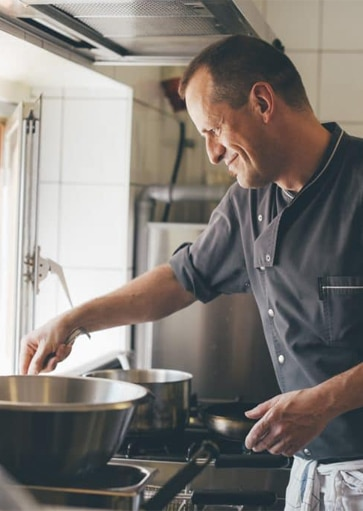
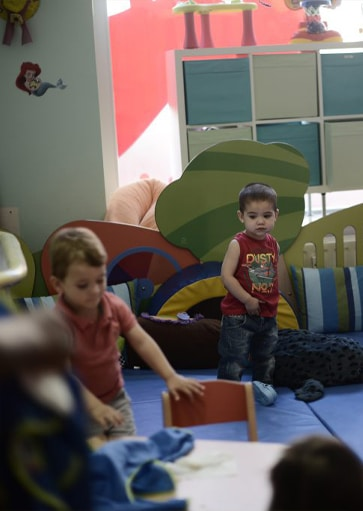
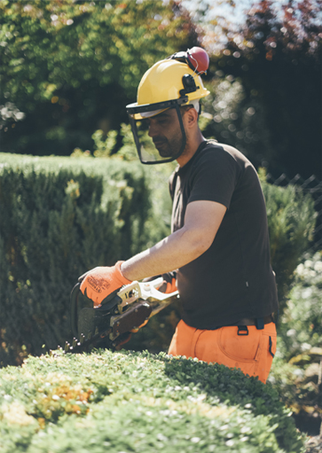
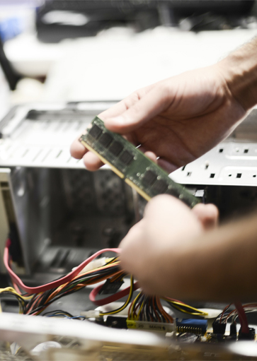
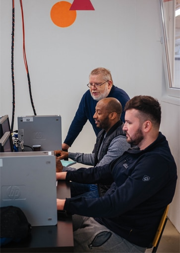
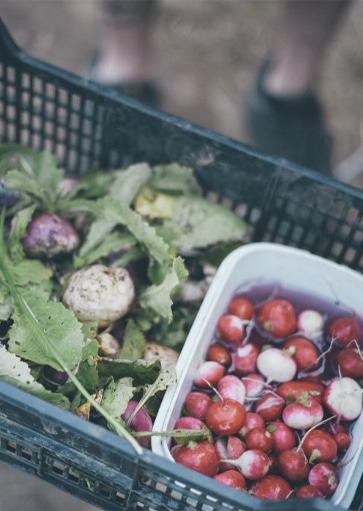
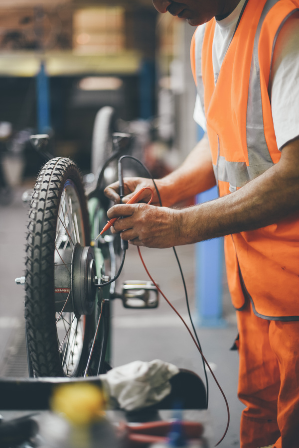

Le Centre d'Initiative et de Gestion Local (CIGL) d'Esch-sur-Alzette est une association sans but lucratif d'économie solidaire née en 1997.
L'association poursuit deux grands objectifs. Le premier est d'aider des personnes sans emploi à retrouver un travail et à se réinsérer dans la vie sociale. Le second est de développer des services qui répondent à des besoins non satisfaits de la population.
Le CIGL Esch défend un système économique soucieux de plus de solidarité et d'équité. Dans le cadre de projets d'intérêt commun, l'association oeuvre à un développement local durable dans de nombreux domaines de l'économie:
L'association collabore étroitement avec les différents organismes publics ou privés, actifs en matière d'emploi et de formation, afin de créer un cadre propice aux objectifs poursuivis.
L'association est neutre au point de vue politique, idéologique et confessionnel.
Rapport d'activités 2024 : (visualiser) (télécharger)
Le Conseil d'administration est constitué par des représentants des forces vives locales. Ces collaborateurs bénévoles s'investissent avec énergie et veillent au bon fonctionnement du CIGL Esch.
| REMACKEL Francis Président |
WEISGERBER Max Vice-président |
OLIVEIRA Pedro Trésorier |
GILBERTZ André Secrétaire |
| MAHNEN François Membre |
PENNING René Membre |
HOFFMANN Mike Membre |
RASQUIN Carmen Membre |
| BERMES Pascal Membre |
KALMES Nadine Membre |
PASQUALONI Nando Membre |
ANZIL Giorgio Membre |
| BARTHELMY Jos Membre |
BIWER Stéphane Membre |
BAUSCH Andy Membre |
BREUER Jacqueline Membre |
| SENECHAL Sandra Membre |